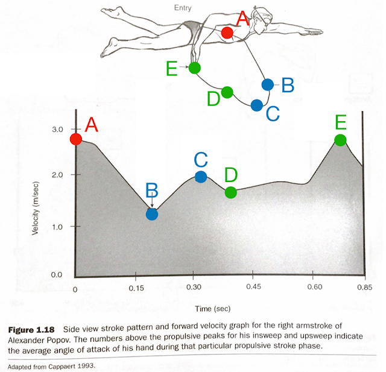

划手過程中有兩次加速期，如何解釋？

上星期去廣州冬泳協會的辦公室談下半年游泳訓練營的工作，這是去年廣馬 PB 班學員 Vivian 引薦的，還記得她在 PB 班的結營儀式後以很認真的口氣請我多在臉書上分享游泳訓練的文章。
昨晚熬夜把答應要給出版社的游泳書稿整理完寄出後，天已經亮了，忽然想到這件事。
若要選一個主題來分享，我先想到的是厄尼斯特．馬格利修（Ernest W. Maglischo）在其所著的《游得最快》（Swimming Fastest）中的一張圖：划手的加速度變化曲線。
從這張圖中可以看到幾個非常有意思的地方：
一、若把自由式划手分成入水延伸、抓水、抱水、推水、提臂五個階段。抓水（A→B），是一段最大幅度的減速階段。
二、划手過程中有兩次加速期（B→C 與 D→E）。
三、抱水與推水的加速過程中有段微小的減速期（C→D）。
很多人看到這個研究會認為抱水與推水是我們要主動用力增加推進力的時刻，但為何會有兩段加速？而且第一段加速結束後有段微小的減速期（C→D），為什麼？又為何在划水初期需要一大段的減速階段？過去這些問題很難解釋清楚，但當我們了解支撐與體重之間的關係後，就都能解釋清楚了。
●A→B：要移動就需要支撐點。因為水是不穩定的，為了形成穩定的支撐，必須先把體重轉移到支撐手上，所以傳統定義的抓水動作並非主動向下壓水，而是因為另一側轉肩與向上提臂的動作，才使右手被動向下壓，這是加速前的準備期，非有不可。泳者透過提臂把體重快速轉移到前伸臂的姿勢，有點像跑步觸地時腳掌正落在臀部前方，所以會有產生減速的剎車效應。
●B→C：右手從抓水轉入抱水姿勢的同時，左手掌從高點入水，位能轉換成動能，前進速度迅速提高，這是失重/失衡的現象，也是第一次加速的過程。
●C→D：入水後，右手上的體重會快速變小，而且身體瞬間變成「平游」姿勢，水阻加大，所以速度會掉下來一點。
●D→E：身體重心（游泳時的身體重心在肚臍附近）愈來愈接近支撐手，所以右手上的重量再次增加，接著第二次失去平衡，身體向前加速落下，在 E 點時達到最高速。
●E 點：此時手臂尚未完全伸直，而速度已經開始快速在往下掉了，如果 E 點之後還刻意用力打直手臂推水的話，只是浪費力氣，而且還會延後提臂與換手的時間，划手的效率和速度都會受到阻礙。此時是左手水感的起點（撐水的起點），此時右手已開始向上提臂（右手手肘已出水），也因為主動提臂的動作，所以左手的水感被動形成。圖中的泳姿在 Pose Method 中稱為「關鍵泳姿」。
圖片修改自：Ernest W. Maglischo, Swimming Fastest. United States: Human Kinetics, 2003. p.29.